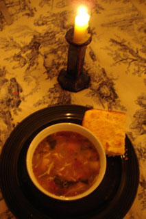
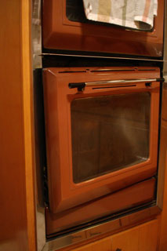

Pantry Soup
On a chilly night when the cupboard is almost totally bare it’s a useful skill to be able to devise a soup out of almost nothing ( think of the childhood bedtime story Stone Soup).

Your ingredient list may vary, but mine began with a box of Whole Foods chicken stock, a pantry essential, and a leftover broiled chicken breast. After that I threw in about 1-2 cups of chopped fresh vegetables that I had on hand, and that wasn’t very many; just celery, onion, carrots, and some wrinkled, sprouting potatoes. I added a can of cannelini beans and a can of diced tomatoes flavored with roasted garlic. I know some folks are too snobby to use them but I think they come in handy in emergencies. I also put in a good dollop of jarred pesto and a generous amount of kosher salt and dried thyme. When the veggies were almost tender I added a big fistful of fine noodles and enough frozen chopped spinach to give the whole thing some nice color.
Another freezer staple is Whole Foods chopped spinach in the big bag; great for spinach omelets, quiche, crepes.
Along with our soup we had big squares of buttermilk cornbread, which was looking great until the oven door fell off in my hand while I was trying to check the bread! I managed to finish the baking by holding the oven together with my hip and cranking the temperature up to 500 degrees.

Comments
Great post! Your soup looks delicious. I made soup tonight too, but I’ll wait until tomorrow to post so that your post can retain top billing. Welcome to the blogosphere, Mommy!
The candle is a nice touch. I always have my dumb Brita filter next to my dinner, or a big trashy bottle of wine.
Add a comment